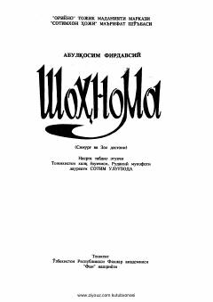

SSAbulqosim Firdavsiyning "Shohnoma" dostonidan "Simurg' va Zol dostoni" nasriy bayoni.
Ushbu kitob buyuk fors shoiri Abulqosim Firdavsiyning "Shohnoma" asaridan "Simurg' va Zol dostoni"ni o'z ichiga oladi. Asar Sotim Ulug'zoda tomonidan nasriy bayon qilinib, o'zbek kitobxonlariga taqdim etilgan. Unda Zolning tug'ilishi, Simurg' tomonidan tarbiyalanishi va uning sarguzashtlari bayon etilgan.